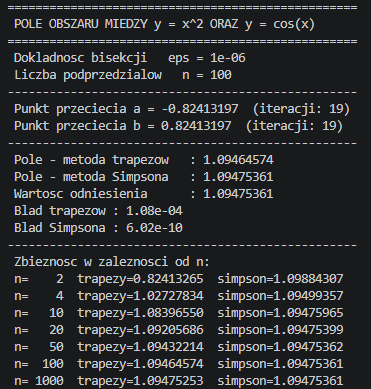

Implementacja programistyczna
Program w Pythonie: bisekcja dla granic całkowania oraz metody trapezów i Simpsona dla pola obszaru.
2.1Opis programu
Program napisano w języku Python 3 i korzysta tylko z wbudowanego modułu math, więc nie wymaga instalowania dodatkowych bibliotek. Realizuje trzy zadania:
- bisekcja – wyznacza dodatni i ujemny punkt przecięcia z dokładnością \(\varepsilon=10^{-6}\),
- całkowanie – oblicza pole złożoną metodą trapezów i złożoną metodą Simpsona dla \(n=100\),
- ocena błędu – porównuje wyniki z wartością \(P=F(b)-F(a)\), gdzie \(F(x)=\sin x-\frac{x^3}{3}\).
Uruchomienie: python program.py. Parametry \(\varepsilon\) i \(n\) zmienia się w dwóch pierwszych stałych na początku pliku.
2.2Kod źródłowy
# -*- coding: utf-8 -*- """ Pole obszaru ograniczonego krzywymi y = x^2 oraz y = cos(x). 1) Punkty przecięcia (granice całkowania) - metoda bisekcji dla f(x) = cos(x) - x^2. 2) Pole obszaru - złożona metoda trapezów oraz złożona metoda Simpsona. 3) Wartość odniesienia z wzoru analitycznego P = F(b) - F(a), F(x) = sin(x) - x^3/3. """ import math EPS = 1e-6 # dokładność bisekcji N = 100 # liczba podprzedziałów (parzysta - wymaga tego metoda Simpsona) def f(x): """Funkcja, której miejsca zerowe szukamy: f(x) = cos(x) - x^2.""" return math.cos(x) - x ** 2 def bisekcja(f, a, b, eps): """Metoda bisekcji na przedziale [a, b], gdzie f(a)*f(b) < 0. Zwraca przybliżony pierwiastek oraz liczbę wykonanych iteracji.""" if f(a) * f(b) > 0: raise ValueError("Brak zmiany znaku na przedziale - bisekcja nie zadziała.") iteracje = 0 while (b - a) / 2 > eps: # połowa długości przedziału = oszacowanie błędu c = (a + b) / 2 # środek przedziału if f(a) * f(c) <= 0: # pierwiastek w lewej połowie b = c else: # pierwiastek w prawej połowie a = c iteracje += 1 return (a + b) / 2, iteracje def g(x): """Funkcja podcałkowa: różnica górnej i dolnej krzywej.""" return math.cos(x) - x ** 2 def trapezy(g, a, b, n): """Złożona metoda trapezów: T = h*[ (g0+gn)/2 + g1 + ... + g(n-1) ].""" h = (b - a) / n suma = (g(a) + g(b)) / 2 for i in range(1, n): suma += g(a + i * h) return h * suma def simpson(g, a, b, n): """Złożona metoda Simpsona (n parzyste): S = h/3*[ g0 + 4*nieparz. + 2*parz. + gn ].""" if n % 2 != 0: raise ValueError("W metodzie Simpsona n musi być parzyste.") h = (b - a) / n suma = g(a) + g(b) for i in range(1, n): suma += (4 if i % 2 == 1 else 2) * g(a + i * h) return h / 3 * suma def F(x): """Funkcja pierwotna: F(x) = sin(x) - x^3/3.""" return math.sin(x) - x ** 3 / 3 def main(): # 1. Granice całkowania: pierwiastek dodatni w [0, 1], ujemny w [-1, 0] b, it_b = bisekcja(f, 0.0, 1.0, EPS) a, it_a = bisekcja(f, -1.0, 0.0, EPS) # 2. Pole obszaru dwiema metodami P_trap = trapezy(g, a, b, N) P_simp = simpson(g, a, b, N) # 3. Wartość odniesienia i błędy P_ref = F(b) - F(a) linia = "-" * 54 print("=" * 54) print(" POLE OBSZARU MIEDZY y = x^2 ORAZ y = cos(x)") print("=" * 54) print(f" Dokladnosc bisekcji eps = {EPS:g}") print(f" Liczba podprzedzialow n = {N}") print(linia) print(f" Punkt przeciecia a = {a:.8f} (iteracji: {it_a})") print(f" Punkt przeciecia b = {b:.8f} (iteracji: {it_b})") print(linia) print(f" Pole - metoda trapezow : {P_trap:.8f}") print(f" Pole - metoda Simpsona : {P_simp:.8f}") print(f" Wartosc odniesienia : {P_ref:.8f}") print(f" Blad trapezow : {abs(P_trap - P_ref):.2e}") print(f" Blad Simpsona : {abs(P_simp - P_ref):.2e}") print(linia) # 4. Zbieżność metod w zależności od n print(" Zbieznosc w zaleznosci od n:") for n in (2, 4, 10, 20, 50, 100, 1000): print(f" n={n:5d} trapezy={trapezy(g, a, b, n):.8f}" f" simpson={simpson(g, a, b, n):.8f}") if __name__ == "__main__": main()
2.3Uruchomienie programu
Zrzut ekranu z wykonania programu w terminalu (polecenie python program.py). Widoczne są parametry wejściowe (dokładność \(\varepsilon\) i liczba podprzedziałów \(n\)), znalezione punkty przecięcia wraz z liczbą iteracji oraz ostateczny wynik pola powierzchni.

| wielkość | wartość z programu |
|---|---|
| dokładność bisekcji \(\varepsilon\) | \(10^{-6}\) |
| liczba podprzedziałów \(n\) | \(100\) |
| punkt przecięcia \(a\) | \(-0{,}82413197\) (iteracji: 19) |
| punkt przecięcia \(b\) | \(0{,}82413197\) (iteracji: 19) |
| pole – metoda trapezów | \(1{,}09464574\) |
| pole – metoda Simpsona | \(1{,}09475361\) |
| wartość odniesienia \(F(b)-F(a)\) | \(1{,}09475361\) |
| błąd trapezów | \(1{,}08\cdot10^{-4}\) |
| błąd Simpsona | \(6{,}02\cdot10^{-10}\) |
| wynik końcowy – pole \(P\) | \(1{,}09475361\) |